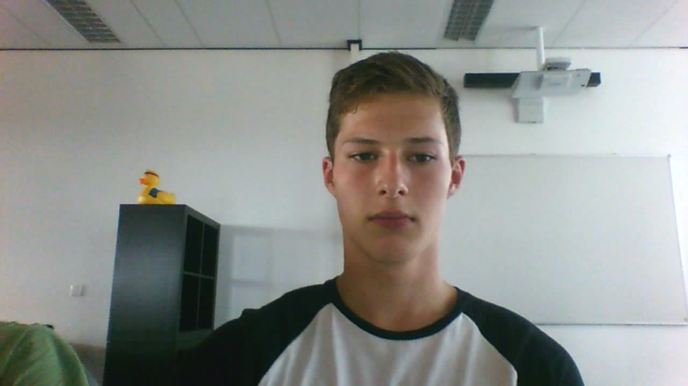

Zoals de titel al zegt dit portfolio gaat over mij, Erick Kok. Ik ben op het moment 17 jaar en ik woon in het boerendorpje Wijngaarden.
Ik ben dus Erick zoals je al hebt kunnen lezen maar dan weet je ook alleen nog maar mijn naam en wat standaard dingen, hier gaan we wat aan doen. Ik ben geboren op 10 Februari 1999 in het ziekenhuis te Dordrecht.
Ik ben een vrij drukke jongen maar soms kan ik ook weer heel stil zijn, het ligt er net een beetje aan hoe ik mn bed ben uitgestapt. Voorderest ben ik best wel sportief, je kan me vaak vinden in de sportschool, boardend over de straten, voetballend op de velden of lekker gamend achter mijn playstation of laptop in mn kamer.
Mijn doel is eigenlijk om zo goed mogelijk te worden in dit vakgebied zodat na deze opleiding kan doorstuderen voor software engineer, maar dit kan altijd nog veranderen aangezien je zoveel kan met dit beroep. Daarom ben ik ook erg gemotiveerd om dit jaar lekker door te lopen en ik hoop natuurlijk vooral onwijs veel te leren.
De school waar het allemaal begon is de Zaaier in Wijngaarden hier heb ik mijn kinderjaren doorgebracht. Mijn middelbare school was de Calvijn in Hardinxveld hier ben ik begonnen op Havo/Vwo maar door een gebruik aan kennis en interesse bij vakken zoals Frans en Duits ben ik na het tweede jaar overgestapt naar VMBO waar ik uiteindelijk mijn diploma heb gehaald. Daarna heb ik een jaartje gevolgd als middenkaderengineer op het DaVinci alleen dit was niks van mij dus helaas een verspild jaartje.
Mijn vaardigheden zijn eigenlijk wel dat ik nieuwsgierig ben en ook wel leergierig, alleen in groepen werken kan soms nog wel wat lastiger zijn voor mij maar dat ligt vooral aan het soort mensen waar ik mee samen werk al hoewel ik het met zo goed als iedereen wel kan vinden. Voorderest hou ik ervan als ik lekker kan doorwerken en mijn ding kan doen.
In mijn leven heb ik nog niet heel veel baantjes gehad, mijn eerste baantje was samen met een vriend van mij kranten bezorgen langs de deuren. Dit heb ik een halfjaartje volgehouden en daarna ben ik ermee gestopt omdat ik een betere baan had gevonden. Deze baan was het verkopen van kaarten langs de deur voor het goede doel waarbij en de patiënten werden geholpen en de studenten die de kaarten aanbieden een extra'tje verdienen. Dit baantje heb ik een jaar volgehouden en daarna ben ik aangenomen bij een Parcelbedrijf genaamd GLS in Sliedrecht. Hier werk ik nu ook een jaar en dit bevalt me nog prima. Werkervaring in de ICT heb ik nog niet maar ik hoop dit jaar nog een bijbaantje te vinden bij een ICT bedrijf zodat ik alles wat ik leer op school daar ook gelijk kan oefenen en mezelf te verbeteren.